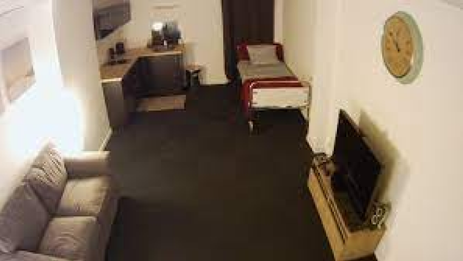
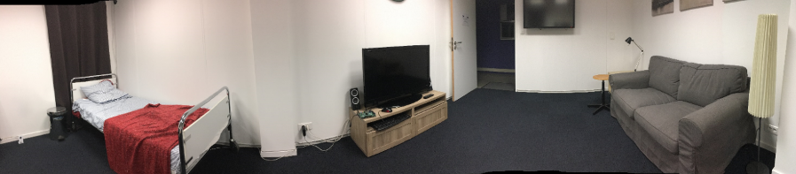

Les travaux de l'équipe débouchent souvent sur une preuve de concept, une réalisation de prototypes ou un déploiement de plateformes technologiques. Ces plateformes sont à la fois un outil interne pour mener des expérimentations et aussi un moyen de communication vers nos partenaires.
Chambre connecté : LivingLab
Le living Lab est le fruit de collaboration avec l'entreprise de mutuelle santé Malakoff Médéric. Initialement, ce Living Lab avait pour but de détecter la chute des personnes âgées sans utiliser de capteurs portés (bracelet, médaillon...).
Une solution a été proposée en utilisant un capteur de type Kinect permettant de garantir le respect de la vie privée et de connaitre à chaque instant la position de la personne dans le studio.
Afin d'étendre les possibilités du studio, un ensemble de capteurs ont été ajoutés : prises connectées, capteurs d'environnements, température, lumière, humidité, gaz...), capteurs de consommation (électricité, eau), Caméras, micro et haut parleurs.
Plusieurs scénarios ont été mis en place pour utiliser les données des différents capteurs et envoyer une alarme (sms, mail) en cas de chute ou si la personne reste trop longtemps allongée sur le sol, en cas de détection d'anomalie (pas suffisamment de consommation d'eau en fonction d'une température trop élevée...). Ce démonstrateur permet également de visualiser les données des différents capteurs en temps réel et à distance, en se connectant sur un site web. Les travaux futurs en lien avec cette plateforme à développer de scénarios en conditions "réelles" dans des EPHAD par exemple pour contribuer dans la prise en charge des risques liés aux personnes en situation de dépendance (déshydratation, comportement, chutes...).

Environnement hybrides connectés :
Cette plateforme est en cours de développement et vise à offrir des services à la personne dans des environnements indoor (bureau connecté, école connectée, usine connectée, …).
Parmi les services, nous envisageons l'étude du comportement des personnes, la détection d'anomalies et la sécurité de l'environnement.
Deux enjeux majeurs sont traités :
(1) L'application des algorithmes d'intelligence artificielle qui prend tout son sens pour la prédiction d'évènements à risque.
(2) La mise en place de moyens numériques interopérables comme une architecture réseau dédiée et des technologies d'acquisition et de communications standards permettant l'accès aux données et lacentralisation/distribution de la prise de décision.
Pour cette plateforme nous disposons de moyens de calcul intensif comme le serveur GPU pour faire du FoG computing qui présente une alternative intéressante par rapport au cloud pour des raisons de sécurité de données et de coût
